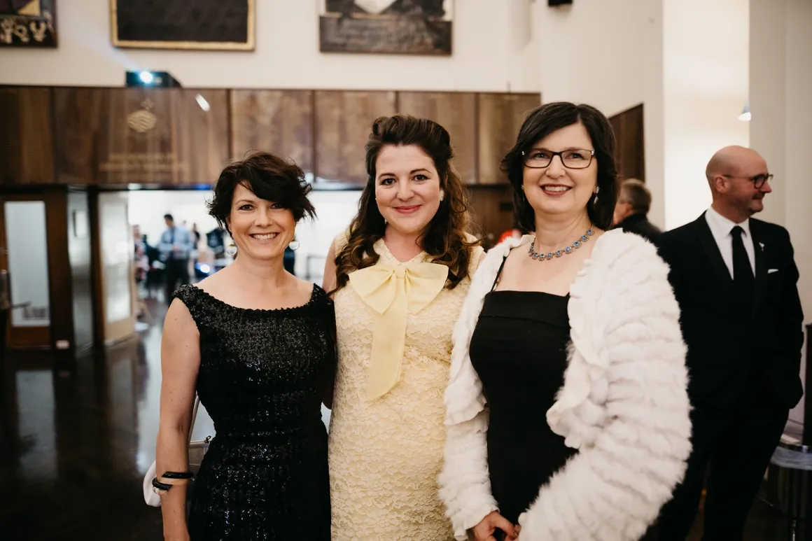

Celebrating Canberra’s Mid-Century Architecture

Canberra is a young city with a rich architectural legacy, shaped by boom periods in the 1920s and 1950s–1980s, with an eclectic but cohesive aesthetic. The mid–late twentieth century development under the National Capital Development Commission (1958–1989) is not widely recognised.
Modernist architects shaped major civic, community and residential buildings, forming a unique mid-century collection in Australia. Many have been lost or are at risk. Canberra Modern engages Canberra and Australia with its contemporary National Capital.
Canberra Modern is a passionate team of heritage and design practitioners dedicated to celebrating Canberra’s unique architectural legacy. With expertise spanning archaeology, museums, heritage management, interior design, and cultural sustainability, they work to research, interpret, and share the city’s modern heritage.
Through education, advocacy, and public engagement, they help communities better understand and value Canberra’s built environment.


Tim “Rosso” Ross is a TV and radio host, comedian, author, and design advocate known for his passion for Australian architecture and his engaging, humorous approach to storytelling. A long-time supporter of Canberra Modern, he has performed at the festival and actively champions the preservation of Australia’s architectural heritage.
He has been recognised with the National Trust Heritage Award for Advocacy (2018) and the Australian Institute of Architects National President’s Prize (2019) for his contribution to architecture and design advocacy.